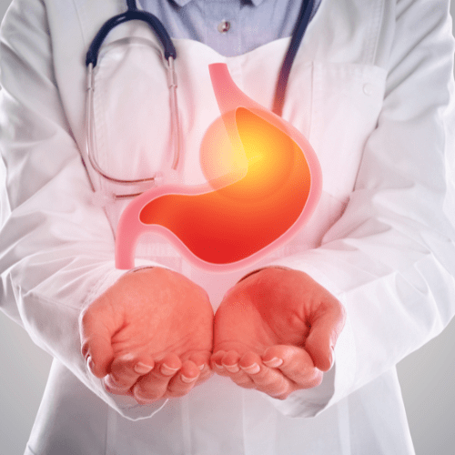
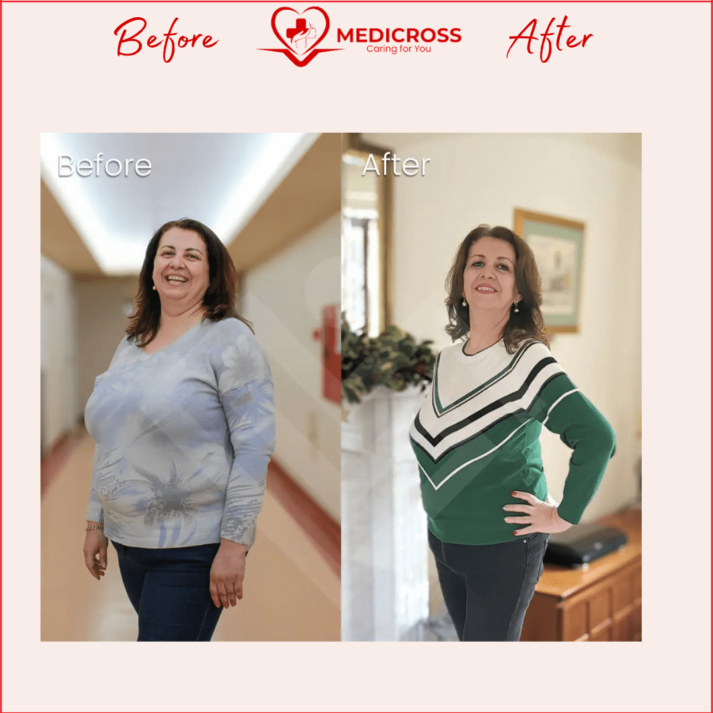
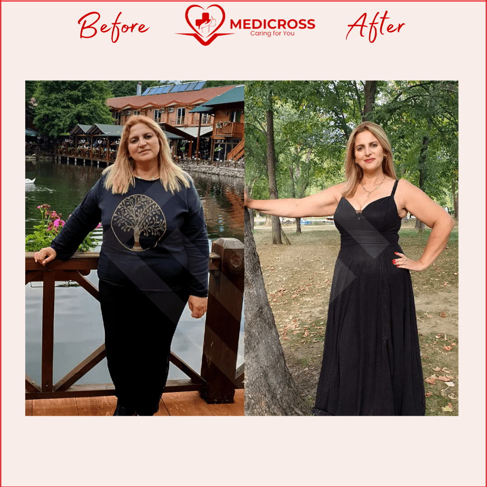
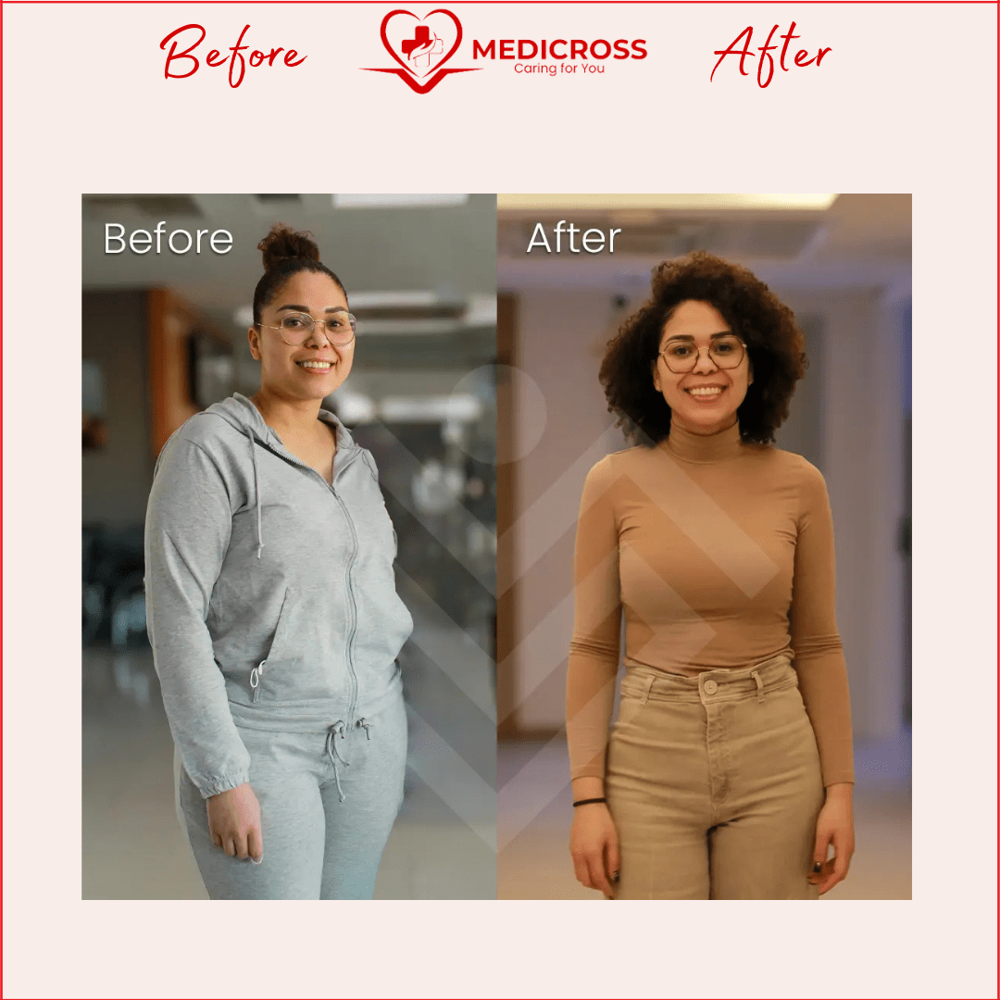
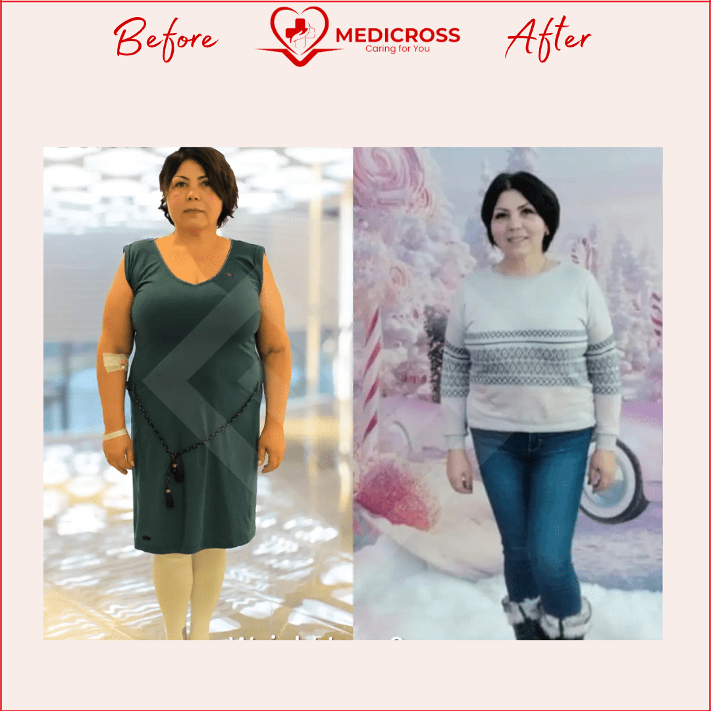
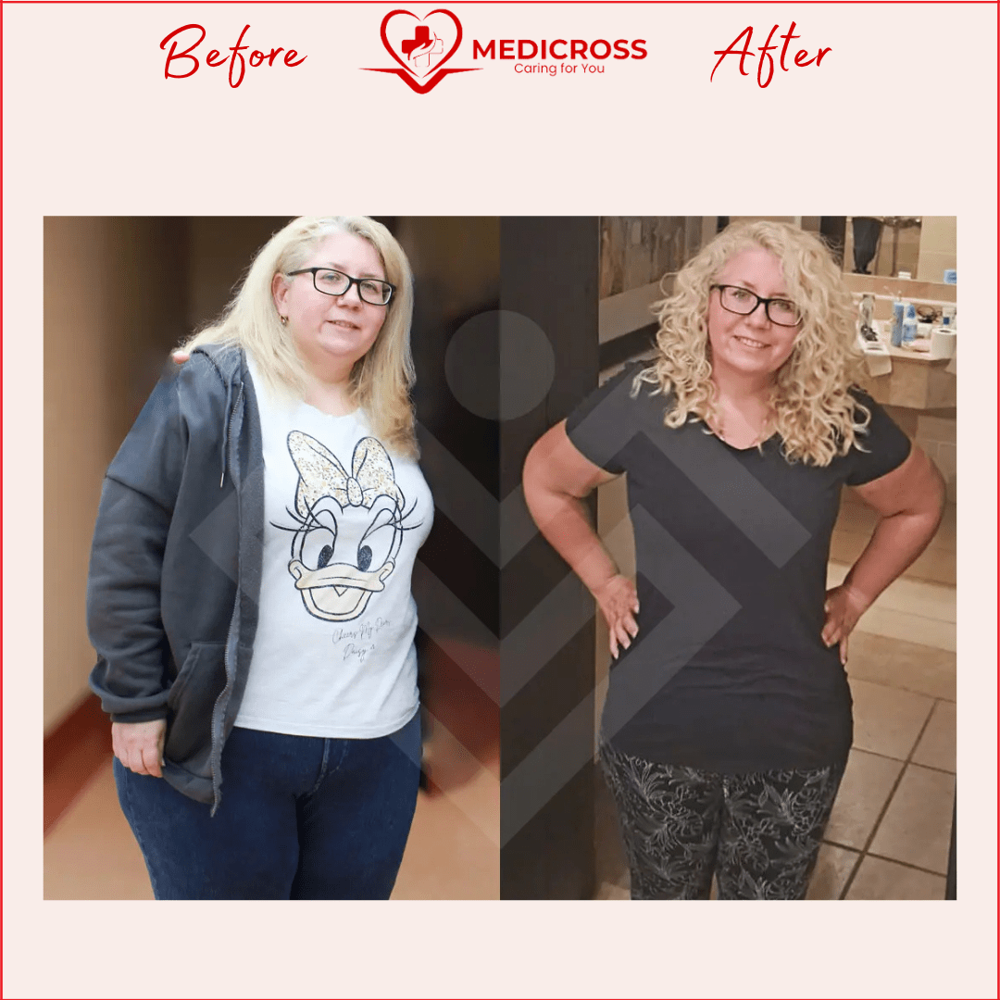
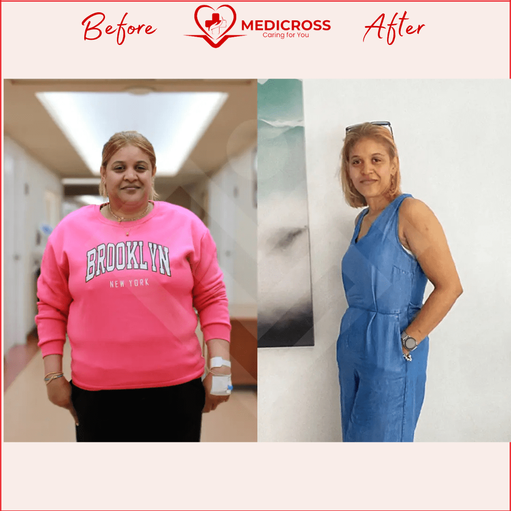
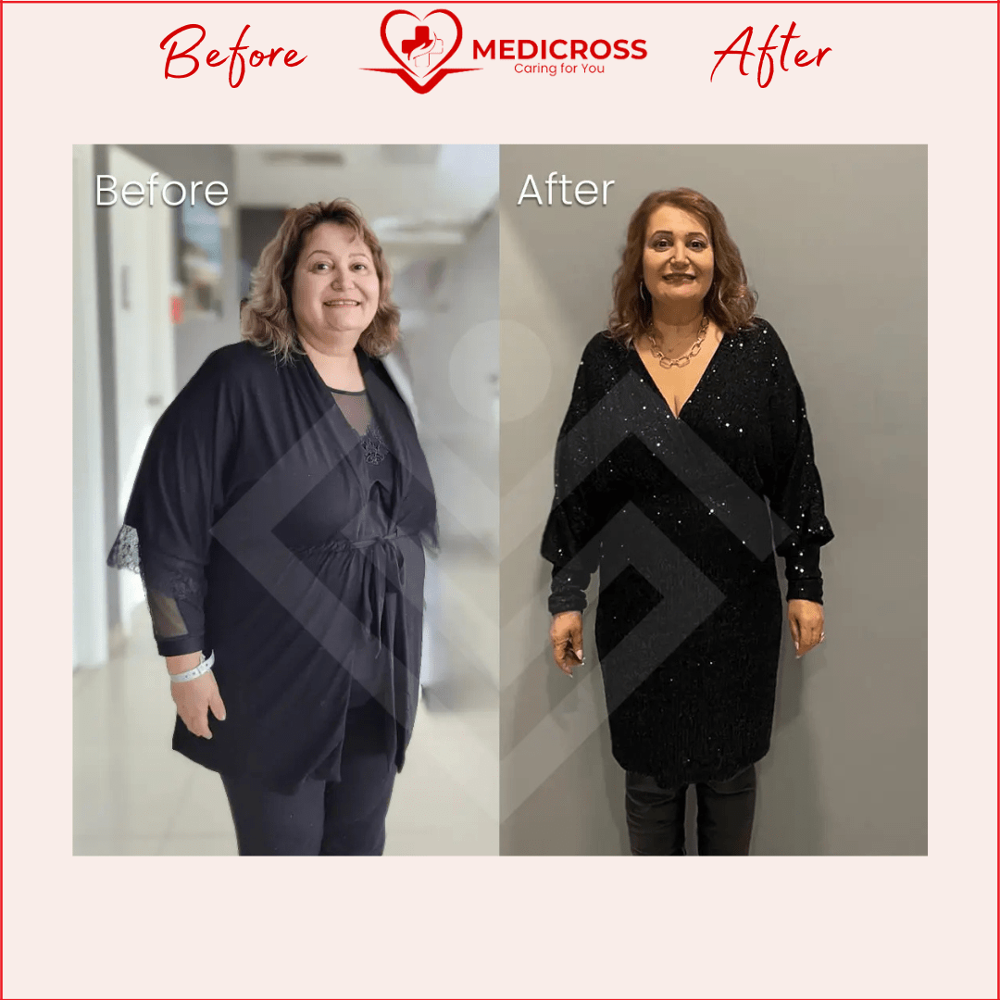
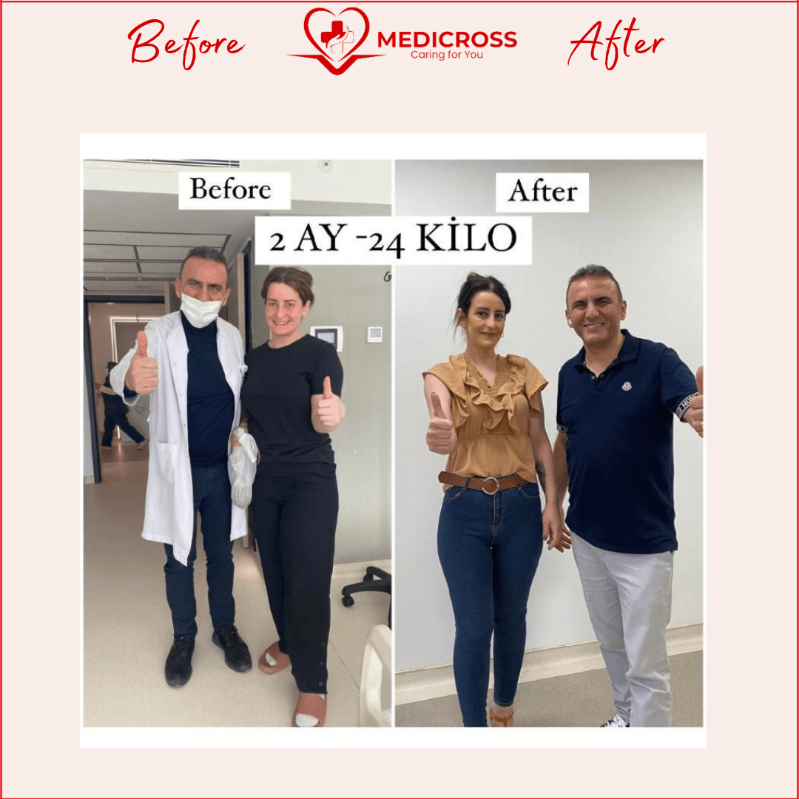

Ce este operația de micșorare a stomacului?
Riscurile obezității nu sunt unele de trecut cu vederea. Obezitatea nu este un defect fizic, ci un factor declanșator al multor boli: rezistența la insulină, diabetul de tip II, hipertensiunea arterială, colesterolul ridicat, AVC, infarct, gută, pietre biliare sau chiar cancerul.
Una dintre cele mai apreciate proceduri de tratare a obezității este gastrectomia sau operația de micșorare de stomac — o procedură simplă, de scurtă durată, dar cu efecte pe termen foarte lung, care chiar ajută la scăderea în greutate. Funcționează pe principiul restricției.
Cu ajutorul acestei intervenții chirurgicale laparoscopice (minim invazive), cca 80% din stomac este eliminat, apetitul și cantitatea de alimente vor fi reduse, iar senzația de sațietate va fi indusă rapid. Doar un mic rezervor gastric, „de forma unei banane”, este lăsat intact.
Durata intervenției este cuprinsă între 1 și 3 ore, iar spitalizarea postoperatorie este de 3 zile.

Când este recomandată operația de micșorare a stomacului?
Dacă indicele de masă corporală (IMC) este cuprins între 35 și 40
Acest indice este calculat în funcție de înălțimea și greutatea fiecărei persoane (asociate, în funcție de caz, cu dislipidemie, hipertensiune arterială sau sindrom metabolic, diabet zaharat de tip 2).
Dacă alte metode folosite pentru a slăbi au eșuat
Capacitatea de a scădea în greutate, chiar și limitat, prin regim alimentar, va crește eficiența unei proceduri de micșorare a stomacului pe viitor.
Dacă există prezența altor boli asociate obezității
Diabet zaharat, hipertensiune arterială, steatoză hepatică, boli cardiovasculare, apnee în somn, artroză, boala de reflux gastroesofagian, infertilitate, disfuncție menstruală, incontinență urinară de efort.
Care sunt beneficiile operației?
- Pacientul va mânca mai puțin, fără a resimți senzația de foame, și se va sătura foarte repede
- Pierderea în greutate este durabilă: în primul an poate fi între 40% și 60% din excesul de greutate, până la 80% în următorii 5 ani
- În prima lună se pot pierde între 7 și 12 kg, iar în lunile următoare, în medie, 5-8 kg lunar
- Spitalizarea durează 72 de ore, recuperarea este rapidă, fără cicatrici, cu dureri postoperatorii limitate
- Sunt ameliorate și alte probleme de sănătate asociate obezității: diabet zaharat, hipertensiune, steatoză hepatică, apnee în somn, artroză
- Funcția cardiacă se îmbunătățește prin reducerea grăsimilor din sânge, diminuând riscul de infarct miocardic
- În cazul femeilor, sarcina este posibilă după aproximativ 12-18 luni de la intervenție, cu monitorizare atentă
- Nu există risc de dumping sindrom sau ocluzie intestinală, dacă pacientul respectă conduita alimentară
Pachet complet, în spitale de renume
Împreună cu partenerii noștri din Turcia, vă propunem un pachet de servicii medicale complet pentru operația de gastric sleeve. Cu dotări de ultimă generație și medici cu renume mondial, lanțul de clinici și spitale private Medical Park este una dintre cele mai respectate rețele medicale din Turcia. Datorită prețurilor accesibile, dar și condițiilor premium de abordare pre și post operatorie, serviciile medicale Tratamente Turcia sunt tot mai căutate de către pacienții români.
Decizia de a te opera este una personală, iar motivele pentru care cei care suferă de obezitate decid să treacă prin intervenția de micșorare a stomacului sunt diferite — de la considerente estetice, afecțiuni asociate kilogramelor în plus sau chiar depresie.
Rezultatele pacienților noștri








De ce să alegi Tratamente Turcia by Medicross
- Abordare personalizată, adaptată la nevoi diferite și unice pentru fiecare pacient.
- Suntem asociați cu spitale din Turcia, Istanbul, cu experiență îndelungată.
- Intervențiile medicale sunt realizate în centre dedicate.
- Împreună cu partenerii noștri am creat un întreg program dedicat pacienților.
- Asigurăm translator, fiind conștienți că pacienții noștri au nevoie de comunicare permanentă.
- Echipa medicală va fi în contact cu tine oricând ai nevoie, atât înainte, cât și după operație, pe termen lung.